Authors: Yuri Z. Sinzato, Annemieke M. Drost, Dedmer B. Van de Waal, Robert Uittenbogaard, Petra M. Visser, Jef Huisman, Maziyar Jalaal
Type: experiment · Category: other · PDF: https://arxiv.org/pdf/2604.27760v1
Analysis basis: abstract only; PDF text extraction failed or PDF unavailable
Summary. This paper investigates the mechanical strength of toxic cyanobacterial colonies using micropipette force sensors and rheology. It finds that these colonies are highly resistant to natural water mixing and that low phosphorus levels actually increase their structural strength. This work provides a physical basis for understanding how blooms persist in various environmental conditions.
Why it may be interesting. not directly relevant
Main problem. The study aims to quantify the linear and non-linear biomechanical properties of Microcystis cyanobacterial colonies and understand how nutrient availability affects their structural integrity.
Main result. The colonies exhibit high tensile strength and yield stress, making them resistant to fragmentation by natural hydrodynamic stresses, and low phosphorus availability leads to stronger colonies.
Method. The researchers used micropipette force sensors for single-cell resolution mechanical quantification and bulk shear rheology to probe macroscopic properties.
Model / system. The system consists of Microcystis cyanobacterial colonies held together by a matrix of extracellular polymeric substances (EPS).
Key observables. Tensile strength, yield stress, and linear/non-linear mechanical properties.
Important parameters / regimes. Nutrient availability (specifically phosphorus levels) and hydrodynamic stresses from wind-mixed lakes.
Paper structure. The paper introduces the environmental importance of cyanobacterial blooms, describes the experimental setup using micropipette sensors and rheology, presents the mechanical findings, discusses the impact of nutrient levels, and concludes with the utility of mechanical testing in studying colony formation.
Toxic cyanobacterial blooms are a growing environmental concern that affects freshwater ecosystems, drinking water supplies, and public health. The cyanobacterium Microcystis is among the most important bloom forming species. It often grows in large colonies, which enhances its flotation, reduces grazing, and improves nutrient regulation. Microcystis cells are held together by a matrix of extracellular polymeric substances (EPS), making colony mechanics crucial for bloom formation. However, an analysis of the biomechanical properties of cyanobacterial colonies, and how these properties relate to environmental conditions like nutrient availability, remains largely missing. Here, we use micropipette force sensors to quantify the linear and non-linear mechanical properties of individual colonies at single-cell resolution. Bulk shear rheology complements these measurements by probing macroscopic properties. The measured tensile strength and yield stress are broadly comparable to those of bacterial biofilms and are far greater than the hydrodynamic stresses typically found in wind-mixed lakes. This implies that cyanobacterial colonies are highly resistant to fragmentation by natural mixing processes. We also show that low nutrient availability, particularly low phosphorus, produced stronger colonies, suggesting structural changes in the EPS. Overall, our results establish mechanical testing as a tool for a more complete and physically grounded understanding of cyanobacterial colony formation.
Authors: J. W. Scott, D. Park, X. Yuan, W. P. Halperin
Type: both · Category: disordered systems and neural networks · PDF: https://arxiv.org/pdf/2604.27098v1
Analysis basis: full PDF text, analyzed in chunks
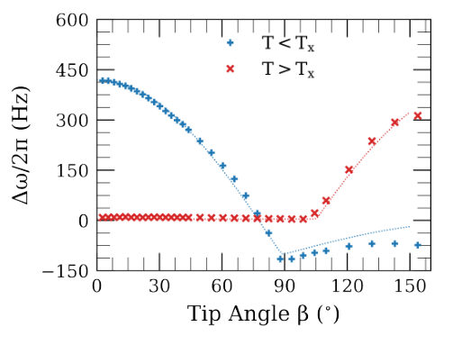
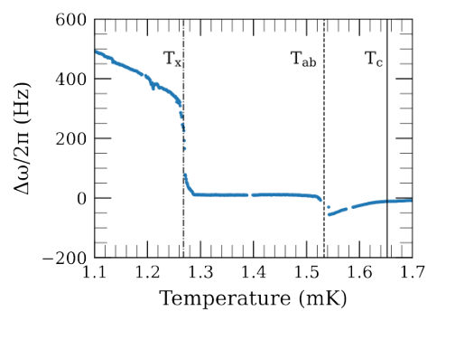
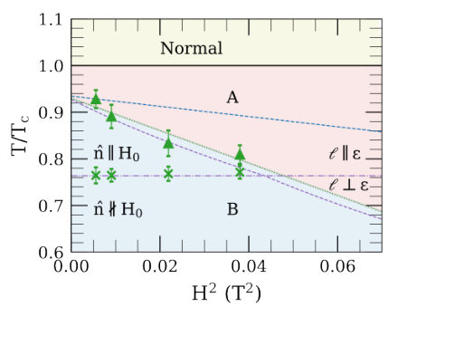
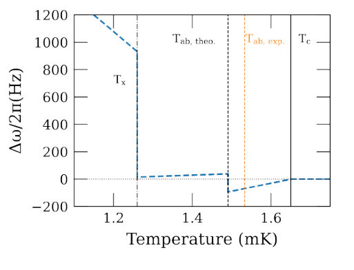
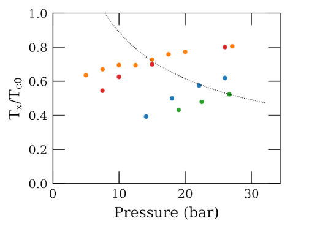
Summary. This paper investigates how anisotropic disorder in silica aerogel affects the phase stability and orientation of the superfluid 3He order parameter. By using NMR spectroscopy and Ginzburg-Landau theory, the authors demonstrate a temperature-dependent reorientation transition (Tx) of the spin-orbit axis. The results provide a framework for understanding how structural anisotropy influences the symmetry-breaking properties of p-wave superfluids.
Why it may be interesting. The study explores how quenched disorder and anisotropy can manipulate the broken symmetry states and topological degrees of freedom in a superfluid, which is relevant to understanding symmetry-breaking in many-body systems.
Main problem. Understanding the phase stability and the mechanism behind the spontaneous reorientation transition (Tx) of the vector degrees of freedom in superfluid 3He within anisotropic silica aerogel.
Main result. The study identifies a sharp, field-independent transition at Tx where the spin-orbit rotation axis (n) reorients, driven by the temperature-dependent anisotropy of the pairing amplitudes.
Method. Nuclear Magnetic Resonance (NMR) spectroscopy was used to measure frequency shifts and tip angle dependence, which were then compared to an anisotropic Ginzburg-Landau model.
Model / system. The system consists of superfluid 3He (a spin-triplet p-wave superfluid) impregnated in uniformly strained silica aerogel. The theoretical framework is an anisotropic Ginzburg-Landau model including quadratic and fourth-order invariants and Zeeman energy.
Key observables. NMR frequency shifts (delta omega), tip angle (beta), transition temperature (Tx), and the orientation of the n and l vectors.
Important parameters / regimes. Strain axis (epsilon), spin-orbit rotation axis (n), orbital chiral axis (l), pair-breaking parameter (x), and dipole field (HD).
Assumptions / limitations. Assumes a linear temperature dependence for the pairing amplitudes (alpha_perpendicular and alpha_parallel) and applies strong-coupling corrections to the GL coefficients.
Figures summary. Figure 4 shows calculated NMR frequency shifts versus temperature compared to experimental data; Figure 5 shows the pressure dependence of the transition temperature ratio Tx/Tc0.
Paper structure. The paper introduces the problem of vector reorientation in aerogel, describes the experimental NMR setup and aerogel strain, presents the Ginzburg-Landau modeling of the phase stability, and concludes with a discussion on the pressure dependence and limitations of the model in non-preplated aerogels.
The A and B phases of superfluid 3 He have vector degrees of freedom that reflect their characteristic broken symmetries, respectively chiral and spin-orbit rotation axes. Anisotropic disorder in the superfluid, imbibed in uniformly strained silica aerogel, orients these degrees of freedom, thereby affecting phase stability. These degrees of freedom have been found to spontaneously reorient at a field-independent transition temperature Tx , that can be accounted for with a temperature dependent anisotropic Ginzburg-Landau model.
Authors: Saroj K. Mishra, Y. Sasaki, S. Isogami, I. Suzuki, Keerthana P, J. Mohanty, Y. K. Takahashi
Type: experiment · Category: statistical mechanics · PDF: https://arxiv.org/pdf/2604.27370v1
Analysis basis: abstract only; PDF text extraction failed or PDF unavailable
Summary. The study demonstrates that using FePt/FeRh bilayers can significantly reduce the coercivity of magnetic media during heating. This is achieved through the phase transition of FeRh, which enhances domain wall mobility via interfacial coupling. This mechanism offers a path toward more energy-efficient magnetic recording technologies.
Why it may be interesting. not directly relevant
Main problem. Reducing the power consumption and thermal load required for Heat-Assisted Magnetic Recording (HAMR) by lowering the coercivity of L10 FePt media.
Main result. FePt/FeRh bilayers exhibit a 40% reduction in coercivity between 300 K and 400 K due to phase-transition-induced domain wall mobility and interfacial exchange coupling, rather than intrinsic anisotropy softening.
Method. Magnetometry, temperature-dependent Magnetic Force Microscopy (MFM), and Time-Resolved Magneto-Optical Kerr Effect (TR-MOKE) measurements.
Model / system. FePt/FeRh bilayers, specifically focusing on the interaction between the ferromagnetic FePt layer and the antiferromagnetic-to-ferromagnetic phase transition of the FeRh layer near 350 K.
Key observables. Coercivity (Hc), domain size, phase contrast, and effective anisotropy field.
Important parameters / regimes. Temperature range (300 K to 400 K), FeRh phase transition temperature (~350 K), and anisotropy field modification (0.4 T).
Figures summary. The figures likely show magnetometry data comparing coercivity in bilayers vs single layers, MFM images capturing domain evolution, and TR-MOKE data showing the stability of the anisotropy field.
Paper structure. Introduction to HAMR challenges, description of the FePt/FeRh bilayer system, presentation of magnetometry results, analysis of domain evolution via MFM, investigation of anisotropy via TR-MOKE, and conclusion on the switching mechanism.
Achieving ultrahigh recording densities with low power consumption is a central challenge for next generation heat assisted magnetic recording (HAMR), as conventional L10 FePt media require intense laser heating due to their high coercivity (Hc) and high Curie temperature (700 K). Here, we address this issue using FePt/FeRh bilayers, where the antiferromagnetic to ferromagnetic transition of FeRh near 350 K generates strong interfacial exchange coupling that assists magnetization switching in the FePt layer. Magnetometry measurements reveal a 40% reduction in Hc from 300 K to 400 K in the bilayer, compared to only 8% in single layer FePt. Temperature dependent MFM directly captures phase transition induced domain evolution, showing a 30% reduction in domain size and enhanced phase contrast. TR-MOKE measurements reveal only a minor (0.4 T) modification of the effective anisotropy field during phase transition, confirming that the intrinsic anisotropy of FePt remains largely preserved. These results demonstrate that the reduction in Hc in FePt/FeRh bilayers is primarily governed by phase transition induced domain wall mobility coupled with interfacial magnetic interactions, rather than by intrinsic anisotropy softening. This mechanism provides a pathway toward efficient magnetization switching under reduced thermal load, making FePt/FeRh heterostructures promising candidates for advanced HAMR media.
Authors: Rahil Haria, Noah Schnitzer, T. Ben Britton, Yaqi Li, Tom J. P. Irons, Sophia Linssen Pitsaros, Ella Banyas, Geri Topore, Annabel Hoyes, Mariana Palos, Sinead M. Griffin, Katherine Inzani, Michele Shelly Conroy
Type: both · Category: other · PDF: https://arxiv.org/pdf/2604.28120v1
Analysis basis: abstract only; PDF text extraction failed or PDF unavailable
Summary. The researchers demonstrate that releasing SrRuO3 films from their substrates creates a hierarchy of ferroelastic domains that spontaneously generate polar textures. By using advanced microscopy, they show that electric polarization emerges at specific structural boundaries, providing a robust platform for engineering polar textures in metals.
Why it may be interesting. not directly relevant
Main problem. The rarity of polar metals due to electron screening and the challenge of engineering stable polar textures in conducting materials.
Main result. Releasing epitaxial SrRuO3 films from substrates drives ferroelastic domain refinement and generates two distinct classes of emergent polar textures at antiphase boundaries and 90-degree walls.
Method. Correlative microscopy combining mesoscale electron channelling contrast imaging (ECCI) and atomic-resolution scanning transmission electron microscopy (STEM), supported by ab initio calculations.
Model / system. Freestanding/membrane-form epitaxial SrRuO3 (strontium ruthenate) films, specifically focusing on ferroelastic domain structures and antiphase boundaries.
Key observables. Electric polarisation, tilt field interpolation (Neel-like and Ising-like), and domain length scales.
Important parameters / regimes. Domain scales ranging from micrometre to nanometre; 4 nm polar nanoclusters.
Paper structure. The paper introduces the concept of polar metals, describes the experimental process of releasing SrRuO3 films, details the microscopy results showing polar textures at boundaries, provides theoretical corroboration via ab initio calculations, and concludes with the implications for metal oxide membranes.
Polar metals, materials in which electric polarisation and metallicity coexist, are exceptionally rare because itinerant electrons screen long-range dipoles and favour centrosymmetric structures. Engineering polar textures in a conducting magnet holds promise for reconfigurable spin orbit coupling and magnetoelectric functionality. Here we show that releasing epitaxial SrRuO3 films from their substrates drives a hierarchy of ferroelastic domain refinement from micrometre to nanometre length scales, and that this structural reorganisation spontaneously generates two distinct classes of emergent polar texture that are ubiquitous across the freestanding membrane. Using correlative microscopy from mesoscale electron channelling contrast imaging (ECCI) to atomic resolution scanning transmission electron microscopy (STEM), we demonstrate that electric polarisation emerges selectively at translation-inequivalent antiphase boundaries (APBs). At these boundaries multicomponent aac tilt field undergoes Neel-like interpolation that preserves the in-phase tilt component and amplifies roto flexoelectric coupling, while translation-equivalent boundaries remain nonpolar. The Neel like interpolation at hard APBs and Ising like collapse of all tilt components at easy APBs is corroborated with ab initio calculations. While embedded 90 ferroelastic walls provide an additional mechanistically distinct source of electric polarisation resulting in polar nanoclusters (4 nm). These distinct nanotextures at 90 walls from via elastic accommodation of strain mismatch between variants and rotostriction as the tilt field interpolates across the boundaries. These findings show that, in a membrane form, metal oxides provide a robust platform for hosting nanoscale ferroelastic domains that generate polar textures.
Authors: Karim Gadelrab, Stefan Reimann-Zitz
Type: theory · Category: other · PDF: https://arxiv.org/pdf/2604.27192v1
Analysis basis: abstract only; PDF text extraction failed or PDF unavailable
Summary. This paper uses lattice Boltzmann simulations to study how various physical parameters control the rupture and coarsening of thin liquid films. It provides predictive scaling laws and identifies a stable coverage plateau, offering practical guidance for engineering robust coatings.
Why it may be interesting. not directly relevant
Main problem. Quantifying how film thickness, surface energy, wettability, and intermolecular forces govern the kinetics and long-time morphology of thin film dewetting.
Main result. Identification of master-curve scalings for dewetting time, showing power-law sensitivity to thickness, and discovery of a coverage plateau that provides a window for morphological stabilization.
Method. Lattice Boltzmann method (LBM) simulations implemented within a lubrication-theory framework.
Model / system. Thin liquid films undergoing instability and rupture dynamics, governed by surface energy, wettability, and intermolecular forces.
Key observables. Time to dewet, film coverage plateau, domain density, and coarsening scaling laws.
Important parameters / regimes. Film thickness, surface energy, wettability (contact angle), and intermolecular forces.
Assumptions / limitations. The dynamics are modeled using lubrication theory and the lattice Boltzmann method.
Paper structure. The paper presents a systematic quantification of dewetting kinetics and morphology using LBM simulations, identifying scaling laws and a stabilization window.
Thin liquid films exhibit rich instability and rupture dynamics that critically impact coating performance across many applications. In this work, we use the lattice Boltzmann method (LBM) simulations within a lubrication-theory framework to systematically quantify how film thickness, surface energy, wettability, and intermolecular forces govern dewetting kinetics and long-time morphology. Master-curve scalings are identified for the time to dewet, revealing a strong power-law sensitivity to film thickness and a comparatively weak dependence on moderate variations in the contact angle. Following rupture, the film reaches a physically meaningful coverage plateau, whose magnitude correlates with material parameters and provides a practical window for morphological stabilization prior to coarsening. Long-time evolution obeys classical coarsening scaling laws, with surface energy controlling domain density. These results demonstrate that lubrication-based models can deliver predictive design guidance for evaluating coating robustness and forming materials and surface engineering strategies. Source code is available at https://github.com/Zitzeronion/Swalbe.jl.
Authors: Vimal Singh, Akash Choudhary
Type: theory · Category: other · PDF: https://arxiv.org/pdf/2604.27348v1
Analysis basis: abstract only; PDF text extraction failed or PDF unavailable
Summary. This paper studies how the viscoelasticity of a microswimmer's body influences its ability to move under reciprocal motion. It compares two different sphere-link configurations and shows that the frequency of motion can control both the speed and the direction of swimming. The study also details how these swimmers influence the surrounding fluid through dipolar and quadrupolar flow patterns.
Why it may be interesting. not directly relevant
Main problem. Investigating how viscoelastic deformability affects the propulsion and far-field hydrodynamics of microswimmers driven by reciprocal actuation.
Main result. The 3-sphere design shows an optimal actuation frequency, while the 4-sphere design features a critical frequency where locomotion direction reverses; far-field flows are characterized by dipolar and quadrupolar contributions.
Method. Theoretical modeling of microswimmer dynamics using Kelvin-Voigt viscoelasticity and hydrodynamic analysis of far-field flow signatures.
Model / system. Two linked-sphere microswimmer designs: a 3-sphere design with actuation at one end and a 4-sphere design with actuation at the midpoint, both featuring a passive viscoelastic body.
Key observables. Kinematic performance (propulsion velocity), locomotion direction, and far-field hydrodynamic signatures (dipolar and quadrupolar flow contributions).
Important parameters / regimes. Actuation frequency, relative length of the actuator segment, and viscoelastic properties (Kelvin-Voigt model).
Assumptions / limitations. The passive body follows Kelvin-Voigt viscoelastic deformability; actuation is reciprocal.
Paper structure. Introduction to viscoelastic microswimmers, description of the 3-sphere and 4-sphere models, analysis of kinematic performance under frequency variation, and characterization of far-field hydrodynamic flow fields.
Viscoelasticity governs the locomotion strategies of deformable microorganisms, rendering it a fundamental mechanical property of microbial motility and an integral component in the design of envisioned microbots. Recent studies have shown that it can enable effective propulsion through non-reciprocal body deformations, even under time-reversible actuation. In this work, we investigate the dynamics of model microswimmers driven by reciprocal actuation, wherein the passive body exhibits viscoelastic deformability. We consider two linked-sphere designs, distinguished by the location of actuation: applied at one end (3-sphere design) or at the midpoint of the swimmer body (4-sphere design). Adopting Kelvin-Voigt deformability, we characterize the kinematic performance of both designs: the three-sphere swimmer possesses an optimal actuation frequency, while the four-sphere swimmer exhibits a critical frequency at which the locomotion direction reverses. We examine the swimmer's far-field hydrodynamic signature and find that resulting flow field is characterized by dominant dipolar and quadrupolar contributions, whose magnitudes are sensitive to the relative length of the actuator segment.
Authors: Johannes Dittloff, Lukas M. Wolz, Matthias U. Quintern, Laura I. Wagner, Matthias Kuhl, Johanna Eichhorn, Ian D. Sharp
Type: experiment · Category: other · PDF: https://arxiv.org/pdf/2604.28094v1
Analysis basis: full PDF text, analyzed in chunks
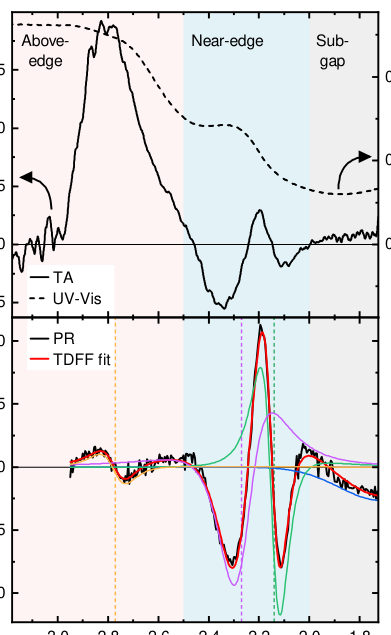
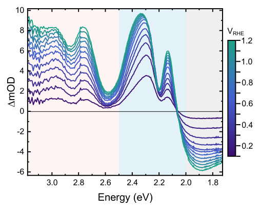
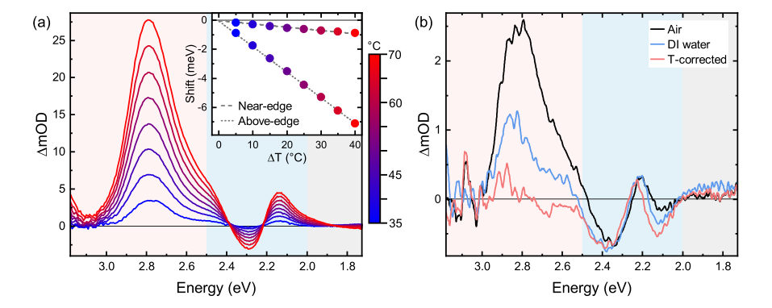
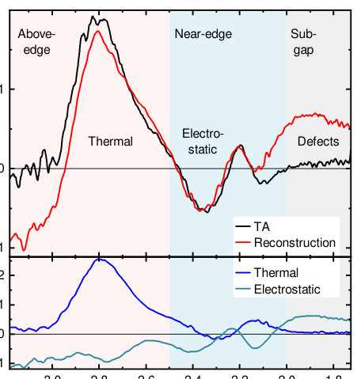
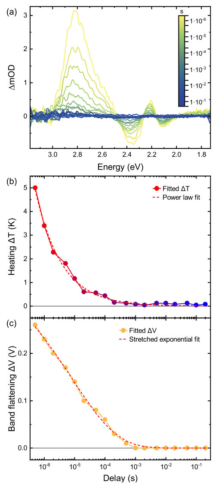
Summary. This paper provides a method to disentangle overlapping physical processes in the transient optical response of semiconductor photoanodes. By quantifying thermal, electrostatic, and defect contributions, the researchers resolved long-standing ambiguities in the carrier dynamics of Ta3N5. This approach offers a template for interpreting complex transient signals in functional semiconductor materials.
Why it may be interesting. not directly relevant
Main problem. The ambiguity in assigning spectral features in the transient absorption (TA) spectra of Ta3N5 photoanodes due to overlapping contributions from lattice heating, electrostatics, and defect states.
Main result. The authors successfully decomposed the TA spectra into quantifiable thermal, electrostatic, and defect-mediated components, identifying a previously unreported photo-induced absorption at 2.80 eV as a thermal effect.
Method. A combination of microsecond-to-second transient absorption spectroscopy, photoreflectance, temperature-dependent UV-Vis, and potential-dependent UV-Vis spectroscopy, using an iterative fitting algorithm to decouple the signals.
Model / system. Polycrystalline Ta3N5 thin-film photoanodes prepared via reactive magnetron sputtering and ammonolysis, featuring anisotropic band structure and defect states (nitrogen vacancies and oxygen impurities).
Key observables. Transient absorption (TA) spectra, photoreflectance (PR) critical points, surface photovoltage (SPV) relaxation, and temperature-dependent/potential-dependent absorption changes.
Important parameters / regimes. Microsecond to second (us-s) timescale; 2.14 eV, 2.27 eV, and 2.80 eV transition energies; 355 nm pump wavelength; 30-70 C temperature range.
Assumptions / limitations. Assumed complete absorption of the pump pulse and assumed specific heat capacity for Ta3N5 to estimate thermal-induced temperature rise.
Figures summary. Figure 1 shows ground-state absorption and TA spectra with identified spectral regimes; Figure 2 displays potential-dependent UV-Vis spectra; Figure 3 illustrates temperature-dependent UV-Vis and the thermal origin of the 2.80 eV feature; Figure 5 shows the TA time delay series.
Paper structure. The paper begins by identifying the ambiguity in TA spectra, then details the experimental setup and characterization of Ta3N5 films, proceeds to present the spectroscopic measurements (PR, T-UV-Vis, P-UV-Vis), describes the iterative decomposition algorithm, and concludes by validating the reconstructed components against physical models of heat diffusion and band bending.
Ta$_{3}$N$_{5}$ is among the most intensively studied photoanode materials for solar-driven water oxidation, yet its performance often remains limited by short carrier lifetimes and defect mediated recombination. Although transient absorption spectroscopy is widely used to probe carrier dynamics in photoelectrodes, spectral assignments are frequently ambiguous due to overlapping contributions. Here, microsecond-to-second transient absorption of Ta$_{3}$N$_{5}$ thin films is combined with complementary optical spectroscopies to disentangle contributions from lattice heating, electrostatics, and defect states. Photoreflectance reveals three critical points in the Ta$_{3}$N$_{5}$ band structure, including two anisotropic near-edge transitions at 2.14 eV and 2.27 eV and a higher-lying transition near 2.80 eV, all closely aligned with dominant transient absorption features. A previously unreported photo-induced absorption at 2.80 eV is attributed to pump-induced lattice heating, while potential-dependent measurements reveal that near-edge bleach features arise from pump-induced band flattening and subsequent surface photovoltage relaxation. Fitting transient absorption spectra with independently measured thermal and electrostatic components enables quantification of both thermal and photovoltage dynamics, while the sub-bandgap response provides insight into the redistribution of defect charge states. Thus, this approach to quantifying thermal, electrostatic, and defect-mediated contributions to microsecond-to-second transient absorption provides broadly applicable insights into photoexcitation and relaxation mechanisms in functional semiconductor photoelectrodes.
Authors: Ang Liu, Jingsong Shang, Jiangang J. Du, Shyamsunder Erramilli, Pritiraj Mohanty
Type: experiment · Category: other · PDF: https://arxiv.org/pdf/2604.28100v1
Analysis basis: abstract only; PDF text extraction failed or PDF unavailable
Summary. This paper presents a method to improve biosensor sensitivity using radiofrequency-induced flexoelectric resonance in silicon nanowires. This technique overcomes the Debye screening limit in high-salt environments, allowing for direct detection of biomarkers without sample dilution. The approach provides a significant boost in conductance response compared to conventional sensing methods.
Why it may be interesting. not directly relevant
Main problem. The detection of biomarkers in physiological fluids is hindered by Debye screening, which masks electrostatic signals from surface-bound molecules.
Main result. Applying a radiofrequency field induces flexoelectric resonance in silicon nanowires, enhancing detection sensitivity by an order of magnitude and reducing Debye screening effects.
Method. The researchers used radiofrequency modulation to induce strain gradients in silicon nanowire field-effect transistors, leveraging flexoelectric polarization to amplify conductance changes.
Model / system. The experimental platform consists of silicon nanowire field-effect transistors (FETs) used for detecting C-reactive protein in high-ionic-strength physiological fluids.
Key observables. Conductance changes in the nanowire and the sensitivity of these changes to biomolecular binding.
Important parameters / regimes. Radiofrequency field strength, resonant frequencies, and ionic strength of the environment.
Paper structure. The paper introduces the problem of Debye screening, describes the implementation of radiofrequency-induced flexoelectric resonance, demonstrates the enhancement using C-reactive protein, and concludes with the implications for nanoscale biosensing.
Sensitive biomarker detection in physiological fluids is often limited by Debye screening, which suppresses electrostatic signals at sensor surfaces. Here we report a sensing approach based on flexoelectric resonance in silicon nanowire field-effect transistors. An applied radiofrequency field induces strain gradients in the nanowires, generating flexoelectric polarization that is amplified at resonant frequencies. This effect enhances the sensitivity of conductance measurements to small surface charge variations associated with biomolecular binding. Using C-reactive protein as a model biomarker, we observe an order-of-magnitude improvement in detection sensitivity compared to conventional operation, with a 62% conductance increase versus 30% without radiofrequency modulation. The high-frequency field also perturbs the electrical double layer, reducing Debye screening in high-ionic-strength environments. These combined effects enable direct biomarker detection without sample dilution. This work establishes flexoelectric resonance as a general strategy for improving nanoscale biosensing performance in physiologically relevant conditions.
Authors: Alessandra Di Gaspare, Sara Ghayeb, Craig Knox, Edmund H. Linfield, Joshua Freeman, Miriam S. Vitiello
Type: both · Category: other · PDF: https://arxiv.org/pdf/2604.27864v1
Analysis basis: full PDF text, analyzed in chunks
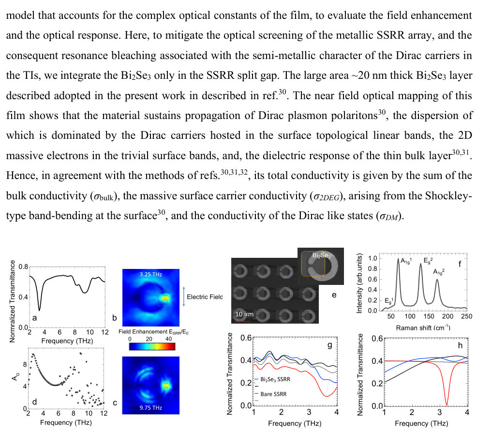
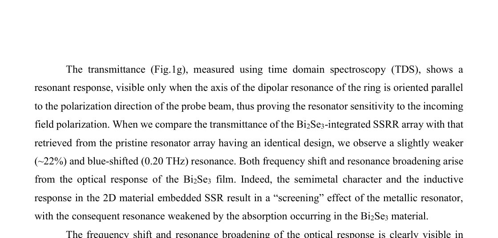
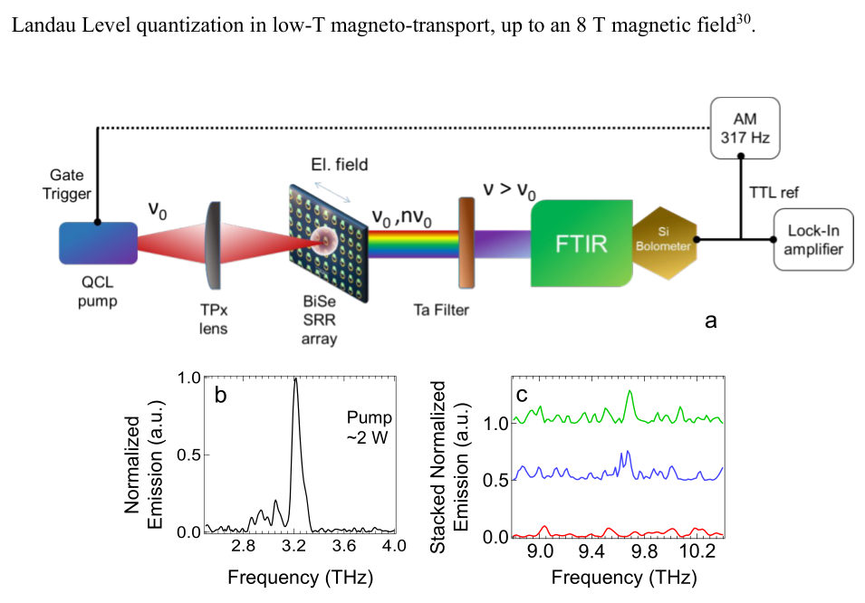
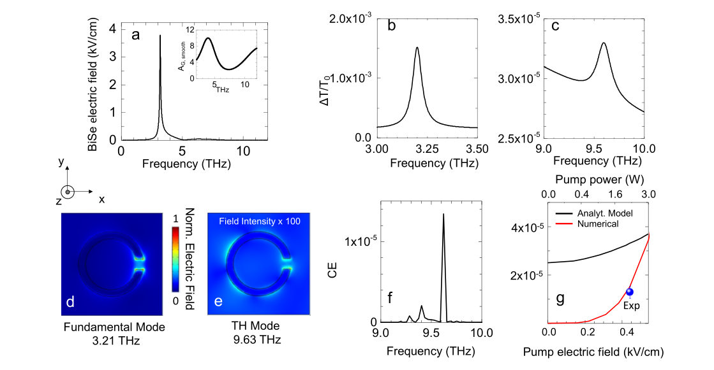
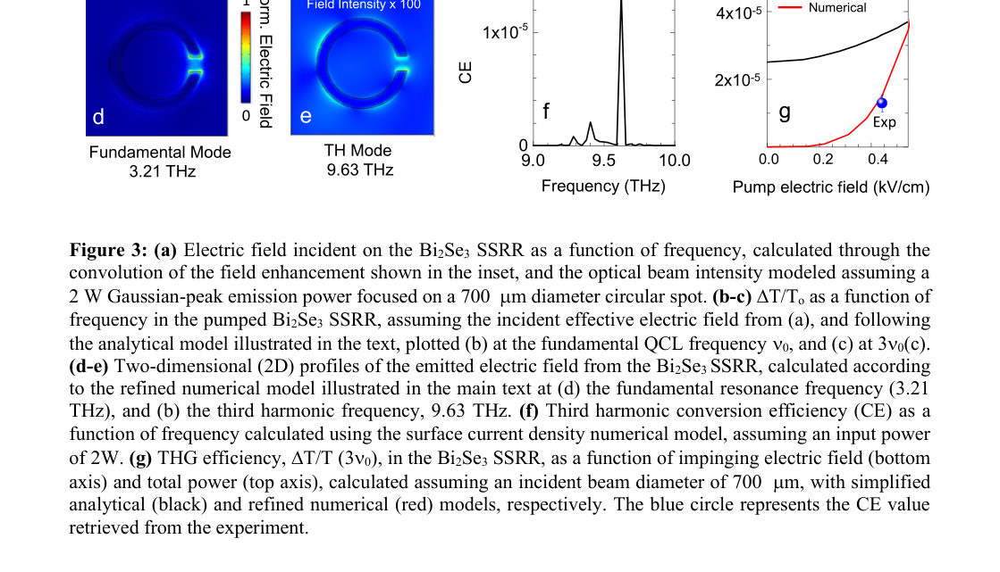
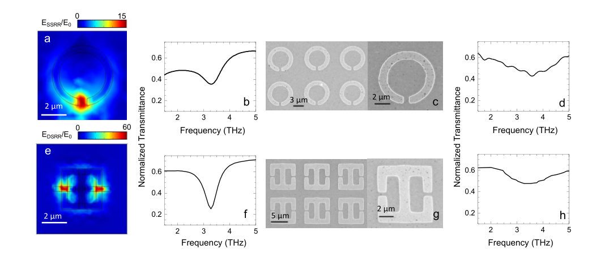
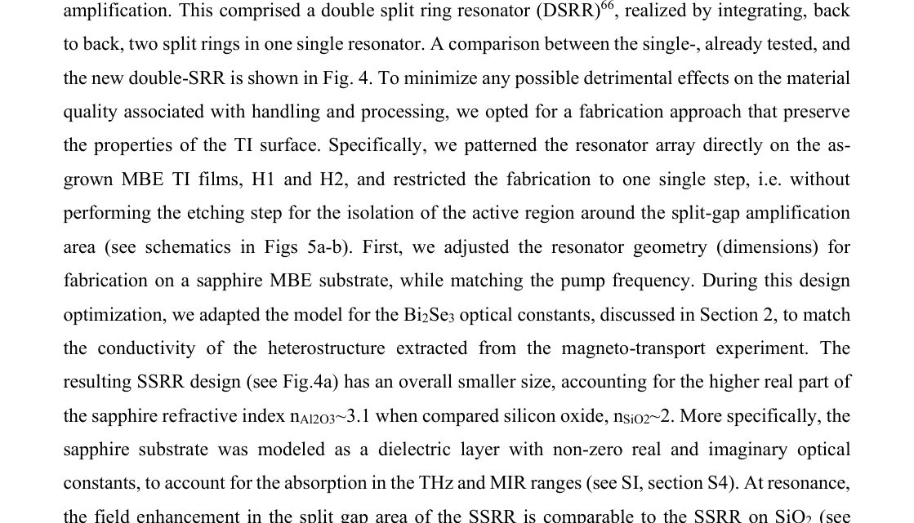
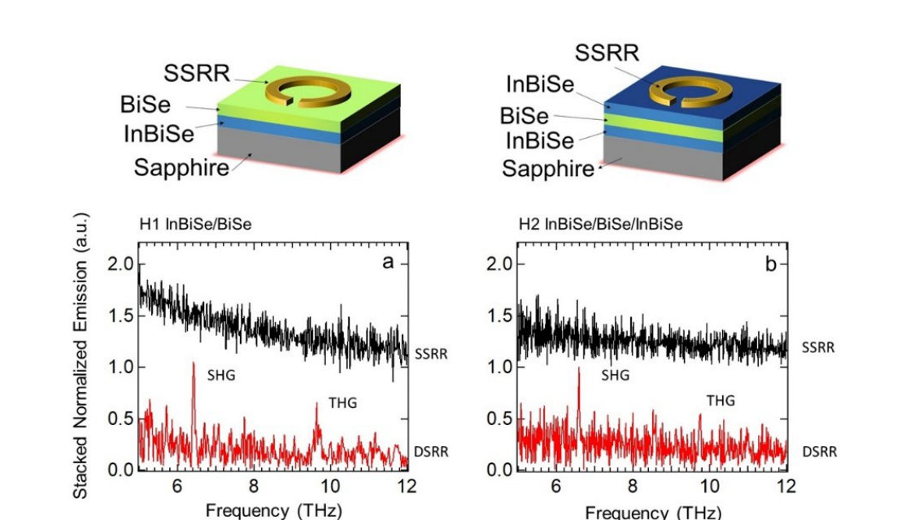
Summary. This paper demonstrates the use of metamaterial resonators to amplify nonlinear optical signals in topological insulators at terahertz frequencies. By engineering van der Waals heterostructures, the authors successfully induced even-order harmonic generation through symmetry breaking. This work provides a potential pathway for developing efficient, on-chip THz frequency up-conversion devices.
Why it may be interesting. not directly relevant
Main problem. Achieving and distinguishing second (SHG) and third (THG) harmonic generation in topological insulators at THz frequencies, specifically overcoming the difficulty of separating bulk and surface state contributions.
Main result. The researchers demonstrated efficient THG and SHG in the 6.4-9.7 THz range by using metamaterial-induced field amplification and symmetry-breaking heterostructures.
Method. The study combines experimental THz time-domain spectroscopy and FTIR emission spectroscopy with Finite Element Method (FEM) simulations and analytical modeling of hot-electron dynamics.
Model / system. The system consists of Bi2Se3 and (InxBiy)2Se3/Bi2Se3 van der Waals heterostructures integrated into metallic split-ring resonator (SSRR) and double split-ring resonator (DSRR) arrays on sapphire or SiO2/Si substrates.
Key observables. Second and third harmonic generation frequencies, conversion efficiency (CE), electric field amplification factor (AG), transmittance, and Hall coefficient nonlinearity.
Important parameters / regimes. THz frequency range (3.25 THz pump), pump power density (~1 kW/cm2), hot-electron cooling time (~3.5 ps), and carrier density (~2.2 x 10^12 cm^-2).
Assumptions / limitations. The nonlinear response is assumed to stem from hot-electron dynamics in massless Dirac carriers; the system is treated in a steady-state illumination regime.
Figures summary. Figure 1 shows simulated transmittance and 2D electric field profiles; Figure 3 illustrates the effective electric field driving nonlinear response.
Paper structure. The paper introduces the challenge of THz harmonic generation, describes the fabrication of TI-based metamaterials, presents experimental detection of SHG/THG, provides numerical validation via FEM, and concludes with a discussion on symmetry breaking and device integration.
High-order harmonic generation (HHG) in solids - the frequency up-conversion of an optical signal - is governed by symmetries. At terahertz (THz) frequencies, HHG is a key technology to access high frequency spectral windows that are usually difficult to cover using conventional solid state laser technologies. This effect has been recently exploited in graphene where HHG has been demonstrated, albeit only at odd multiples of the driving frequency owing to its inherent centro-symmetry. In topological insulators (TIs), the combination of spin-orbit interaction and time-reversal symmetry create an insulating bulk state with an inverted band order, inseparably connected with conducting surface states. TIs have been predicted to support unconventional high harmonic generation from the bulk and topological surface, which are usually difficult to be distinguished. However, no experimental results have been provided, so far. Here, we exploit the strong optical field amplification provided by an array of single or double split ring resonators, with embedded Bi2Se3 or (InxBi(1-x))2Se3/ Bi2Se3 van der Waals heterostructures, to achieve up-conversion in the 6.4 (even) - 9.7 (odd) THz frequency range. This results from bulk centro-symmetry (odd states) and symmetry breaking in the topological surface states (odd and even).
Authors: V. I. Kuznetsov, O. V. Trofimov
Type: both · Category: other · PDF: https://arxiv.org/pdf/2604.27848v1
Analysis basis: full PDF text, analyzed in chunks
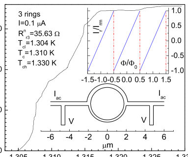
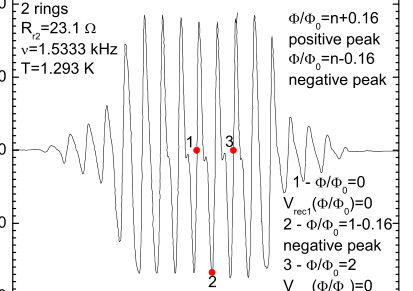
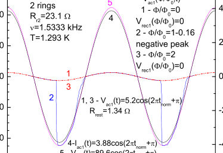
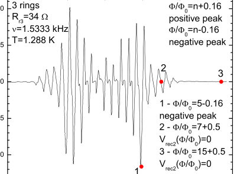
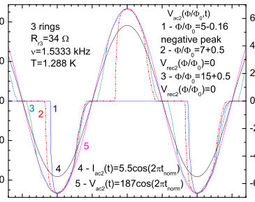
Summary. This paper resolves a long-standing discrepancy in superconducting physics by explaining why critical current maxima in asymmetric rings shift relative to zero magnetic flux. The authors attribute this shift to differences in kinetic inductance between the ring's arms caused by varying critical temperatures. This model successfully reconciles previously contradictory experimental results.
Why it may be interesting. not directly relevant
Main problem. Explaining the mysterious temperature-dependent phase shift of the maxima of critical currents of different polarity relative to zero magnetic flux in asymmetric superconducting aluminum rings.
Main result. The authors propose a model where the phase shift is equal to the difference between the dimensionless kinetic inductances of the wide and narrow semirings, driven by different critical temperatures in the two arms.
Method. The study combines experimental measurements of rectified AC voltage and critical currents in series of asymmetric rings with a theoretical model based on Ginzburg-Landau theory and asymmetric dc SQUID physics.
Model / system. The physical system consists of circularly-asymmetric aluminum rings (thin-film interferometers) fabricated via electron beam lithography. The model treats the rings as asymmetric dc micro-SQUIDs where kinetic inductance dominates magnetic inductance.
Key observables. Rectified DC voltage (V_rec), critical currents of positive and negative polarity (Ic+ and Ic-), resistance oscillations (delta R), and AC voltage oscillograms.
Important parameters / regimes. Magnetic flux (Phi/Phi0), temperature (T), critical temperatures (Tcw, Tcn), ring widths (ww, wn), and dimensionless kinetic inductance (l).
Assumptions / limitations. The current-phase relationship is assumed to be nearly sinusoidal, and the applied magnetic field is low enough that its effect on critical current density can be neglected.
Figures summary. Figures show the geometry of asymmetric rings, plots of resistance transitions, voltage waveforms (oscillograms) at different flux levels, and experimental temperature-dependent phase shifts compared to theoretical fits.
Paper structure. The paper introduces the problem of the phase shift, describes the experimental setup and fabrication, presents measurements of rectified voltage and critical currents, proposes a kinetic inductance-based model, and validates the model against experimental data and previous studies.
We measured the rectification of an ac voltage in a structure of superconducting circularly-asymmetric aluminum rings in series, permeated with a magnetic flux and biased with a low-frequency alternating current (without a dc component). This rectification is due to the shift of the maxima of the critical currents of different polarity relative to the zero flux in opposite directions along the flux axis in the asymmetric ring. For the first time, we propose a model for a temperature-dependent phase shift equal to difference between dimensionless kinetic inductances of wide and narrow semirings having the same length and thickness. The shift is not zero in the case of different critical currents densities in both semirings. This is possible only in a situation of different critical temperatures of both semirings. The model describes well the temperature-dependent shift of the maxima of the critical currents, answers the long-standing mysterious challenge of the shift and removes extremely strange contradiction between the results of different measurements, previously found in circularly-asymmetric aluminum structures.
Authors: Tudor-Gabriel Dumitru, Anna Sitek, Gunnar Thorgilsson, Sigurdur I. Erlingsson, Andrei Manolescu
Type: theory · Category: other · PDF: https://arxiv.org/pdf/2604.27769v1
Analysis basis: abstract only; PDF text extraction failed or PDF unavailable
Summary. This paper theoretically examines the spin-orbit interaction in a hexagonal core-shell semiconductor-metal nanowire. It explores how different interface potentials influence the strength of spin-orbit coupling and how electrons are localized within the semiconductor shell. This is important for understanding spin manipulation in semiconductor nanostructures.
Why it may be interesting. not directly relevant
Main problem. The study investigates how interface potentials and the geometry of a core-shell nanowire affect spin-orbit interaction and electron wave function localization.
Main result. The research discusses the effects of band off-offset potentials and complex potential barriers on the strength of spin-orbit coupling and the spatial distribution of wave functions within the semiconductor shell.
Method. The authors employ a theoretical model derived from the k-dot-p method to simulate the electronic properties of the nanowire.
Model / system. A tubular semiconductor nanowire with a hexagonal cross-section, consisting of an inner semiconductor core and an outer metallic shell, featuring specific potential barriers at the interfaces.
Key observables. Spin-orbit coupling strength and wave function localization.
Important parameters / regimes. Band off-offset potential at the inner interface and the potential barrier at the metal-semiconductor contact.
Assumptions / limitations. The model assumes a hexagonal geometry for the nanowire cross-section and uses a k-dot-p approximation.
Paper structure. The paper presents a theoretical study of a specific nanowire geometry, applying the k-dot-p method to analyze the impact of interface potentials on spin-orbit interaction and wave function localization.
We study theoretically the spin-orbit interaction of electrons confined in a tubular semiconductor nanowire, between an inner semiconductor core and an outer metallic extra shell. A band off-offset potential is present at the inner semiconductor-semiconductor interface and a more complex potential barrier at the outer metal-semiconductor contact. The cross section of the nanowire has a hexagonal geometry. We use a model derived from the k-dot-p method, and discuss the effects of the interface potentials on the strength of the spin-orbit coupling and on the localization of the wave functions within the semiconductor shell
Authors: D. Choi, M. Först, M. Fechner, M. Buzzi, X. Deng, Z. Zeng, K. H. Martens, D. Prabhakaran, C. Putzke, P. Moll, P. G. Radaelli, A. Cavalleri
Type: experiment · Category: other · PDF: https://arxiv.org/pdf/2604.27524v1
Analysis basis: abstract only; PDF text extraction failed or PDF unavailable
Summary. This paper reports the discovery of an optical phonoelectric effect where light-induced optical phonons create electrical polarization much faster than mechanical strain. This effect bypasses the speed limits of sound and the physical limits of material fracture, offering a new way to control polarization in quantum materials.
Why it may be interesting. not directly relevant
Main problem. Traditional piezoelectricity is limited by the speed of sound, the difficulty of tuning intrinsic coupling, and the risk of material fracture under high strain.
Main result. The authors demonstrate 'optical phonoelectricity,' a strain-free, piezoelectric-like response driven by photo-excited optical phonon distortions that is four orders of magnitude faster than traditional piezoelectricity.
Method. The researchers use ultrafast optical excitation to induce phonon rectification in a material, creating electrical polarization without mechanical strain.
Model / system. The experimental platform is the weak piezoelectric material BPO4.
Key observables. Electrical polarization and phonon rectification.
Important parameters / regimes. The speed of the effect is limited by the speed of light rather than the speed of sound; the induced polarization is significantly higher than the fracture limit of strain-induced piezoelectricity.
Paper structure. The paper introduces the limitations of piezoelectricity, presents the realization of the optical phonoelectric effect in BPO4, compares its speed and magnitude to traditional piezoelectricity, and discusses potential applications in quantum materials and devices.
Piezoelectricity is a technologically important property of certain insulators in which mechanical strain induces an electrical polarization. However, the rate at which a piezoelectric response can be established over a macroscopic volume is limited by the sound velocity, constraining applications in high-bit-rate transduction and sensing. Furthermore, the strength of the piezoelectric effect is not readily tunable, as it depends on intrinsic anharmonic coupling between strain and intra-unit-cell distortions in a given material. Lastly, the maximum amplitude of the effect is bounded by material fracture, which sets in already at percent level strain values. Here we overcome these limitations by realizing a strain-free, piezoelectric-like response driven solely by photo-excited optical phonon distortions. We demonstrate such optical phonoelectricity in the weak piezoelectric BPO$_4$, in which we induce electrical polarization through phonon rectification. This effect is established over macroscopic volumes with four orders of magnitude higher speed than piezoelectric responses, ultimately limited by the speed of light. The maximum induced polarization is estimated to be far in excess of that attainable through strain at the fracture limit. Ultrafast phonoelectricity opens up new opportunities for optical control in quantum materials, but also for device applications.
Authors: Matthias Roeper, Robin Buschbeck, Jakob Wetzel, Tobias Ritschel, Anna-Lena Hofmann, Vladyslav Kovtunovych, Mike N. Pionteck, Javier Taboada-Gutiérrez, Alexey B. Kuzmenko, Martina Basini, Vivek Unikandanunni, Iuliia Kiseleva, Jochen Geck, Susanne C. Kehr, Maximilian Lederer, Simone Sanna, Lukas M. Eng, Samuel D. Seddon
Type: both · Category: other · PDF: https://arxiv.org/pdf/2604.28183v1
Analysis basis: abstract only; PDF text extraction failed or PDF unavailable
Summary. The researchers show that applying small amounts of uniaxial strain can reversibly control the ferroelastic domain structure in LaAlO3. This method allows for large-scale domain engineering and surface flattening, which could be used to program domain architectures in oxide-based electronic and photonic devices.
Why it may be interesting. not directly relevant
Main problem. The difficulty in achieving deterministic, large-scale, and reversible control over ferroelastic domain populations in functional oxides without relying on local probes or temperature changes.
Main result. Demonstration of continuous and reversible manipulation of ferroelastic domain structures in single-crystal LaAlO3 using in-situ uniaxial strain, leading to surface flattening and domain reorganization.
Method. A combination of in-situ uniaxial strain application, atomic force microscopy (AFM), X-ray diffraction (XRD), Raman spectroscopy, and first-principles calculations.
Model / system. Single-crystal LaAlO3 (lanthanum aluminate) undergoing a strain-driven structural transition from a rhombohedral R3c ground state toward a predicted orthorhombic Fmmm phase.
Key observables. Twin domain population, surface topography/flattening, and structural phase evolution.
Important parameters / regimes. Applied uniaxial strain levels below 0.5%.
Paper structure. The paper introduces the problem of domain control, presents the experimental demonstration of strain-driven manipulation, details the multi-modal characterization (AFM, XRD, Raman), supports findings with first-principles calculations, and discusses implications for heterostructures.
Multiferroic domain walls in functional oxides exhibit properties distinct from the bulk and are increasingly exploited as active elements in nanoelectronic and photonic devices. Deterministic control of domain populations has typically remained limited to local control, or removal with temperature. Here we demonstrate continuous, reversible manipulation of the ferroelastic domain structure in single-crystal LaAlO$_3$ using in-situ uniaxial strain. Combining atomic force microscopy, X-ray diffraction, and Raman spectroscopy with first-principles calculations we map the complete microscopic evolution of the twin domain population through the strain-driven transition from the rhombohedral $R\bar{3}c$ ground state toward the predicted orthorhombic $Fmmm$ phase. Applied strains below $0.5\%$ produce pronounced surface flattening and large-scale domain reorganisation, establishing uniaxial strain as a technically accessible control parameter for ferroelastic domain engineering. These results open a route to active, real-time programming of domain architectures in LaAlO$_3$-based heterostructures, with implications for strain-tunable superconducting interfaces, nanoscale phonon-polariton optics, and ultrafast lattice control.
Authors: V. I. Kuznetsov, O. V. Trofimov
Type: experiment · Category: other · PDF: https://arxiv.org/pdf/2604.27881v1
Analysis basis: full PDF text, analyzed in chunks
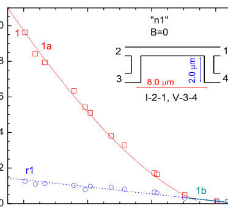
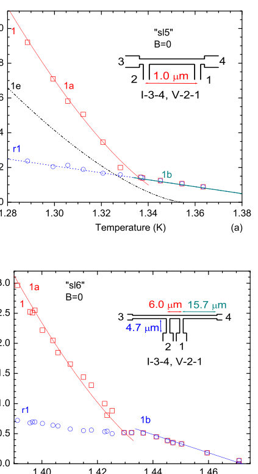
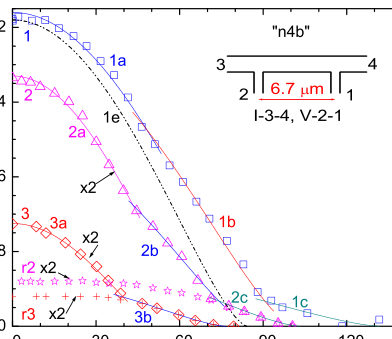
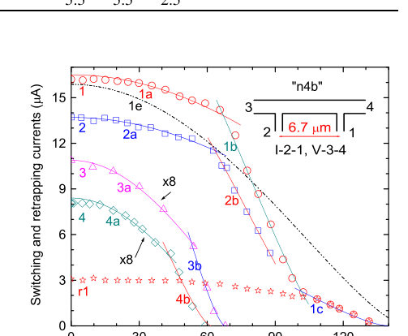
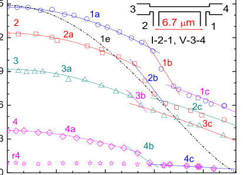
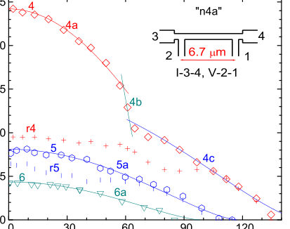
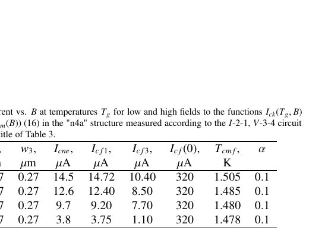
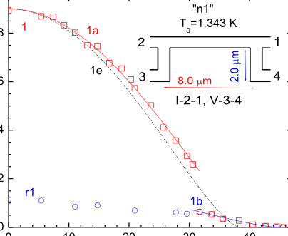
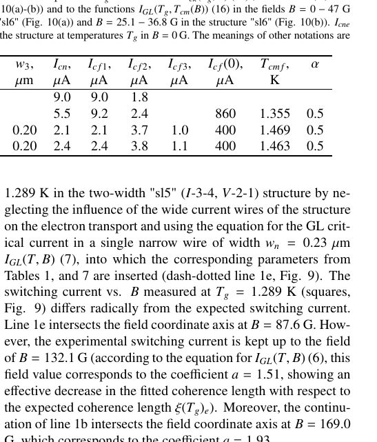
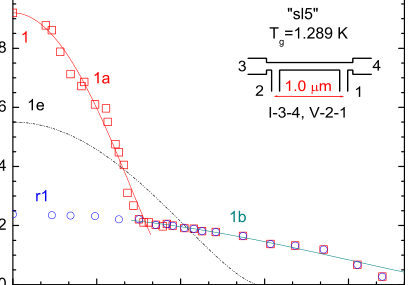
Summary. This paper reports on anomalous critical current behavior in superconducting aluminum wires of varying widths. The researchers found that the switching current is nonlocal and remains non-zero in magnetic fields higher than theoretically predicted, challenging existing Ginzburg-Landau descriptions of quasi-1D superconductors.
Why it may be interesting. not directly relevant
Main problem. Investigating the unusual, nonlocal behavior of critical switching currents in quasi-one-dimensional superconducting aluminum structures with varying wire widths under magnetic fields.
Main result. The experimental switching current is found to be nonlocal, depending on the junction area and persisting in magnetic fields that exceed the maximum critical field of the individual wires, a phenomenon that contradicts standard Ginzburg-Landau predictions.
Method. Measurement of current-voltage (I-V) characteristics, specifically tracking switching and retrapping currents, using various circuit configurations and comparing results to Ginzburg-Landau and Kupriyanov-Lukichev theories.
Model / system. Thin-film aluminum (Al) quasi-one-dimensional structures on silicon substrates, featuring 'two-width' (narrow and wide wires) and 'three-width' geometries in the dirty limit.
Key observables. Switching current (Is), retrapping current (Ir), and DC voltage appearance/disappearance.
Important parameters / regimes. Magnetic field (B), temperature (T), wire widths (wn, ww), Ginzburg-Landau coherence length (xi), and critical temperature (Tc).
Assumptions / limitations. The system operates in the dirty limit (electron mean free path much smaller than coherence length); calculations sometimes neglect the influence of one wire type on the other to establish a baseline.
Figures summary. Figure 1 shows sketches of the wire structures; Figure 4 displays switching and retrapping currents vs. magnetic field for the n4b structure; Figure 10(a) shows the sl6 three-width structure.
Paper structure. The paper introduces the experimental setup and geometry, details the measurement methods and temperature/field regimes, presents the experimental results for various structures (n4a, n4b, sl5, sl6), compares these results to Ginzburg-Landau theory, and concludes by discussing the discrepancy between experiment and theory.
We measured unusual critical currents as functions of temperature in the zero field and as functions of a magnetic field perpendicular to the substrate surface at a given temperature close to the critical temperature in thin-film long quasi-one-dimensional superconducting aluminum two-width structures consisting of narrow and wide wires with different critical temperatures. It is found that the experimental critical switching current as a function of the field at a given temperature, determined by the appearance of a dc voltage on a short section of the structure, is nonlocal (dependent on electron transport in the area containing the junction line between the narrow and wide wires). When current flows through the narrow and wide wires of the structure, the switching currents, experimental and calculated within the framework of the Ginzburg-Landau theory, differ radically from each other. A nonzero switching current exists in high fields greater than the maximum critical magnetic field in a quasi-one-dimensional superconducting wire. In the aluminum two-width structures studied here, the unusual measured switching current challenges description by known theories.
Authors: M. Balli, L. Attou, S-E. Bouzarmine, S. Oubad, K. El Maalam, P. Fournier, S. Mangin
Type: both · Category: strongly correlated electrons · PDF: https://arxiv.org/pdf/2604.28128v1
Analysis basis: full PDF text, analyzed in chunks
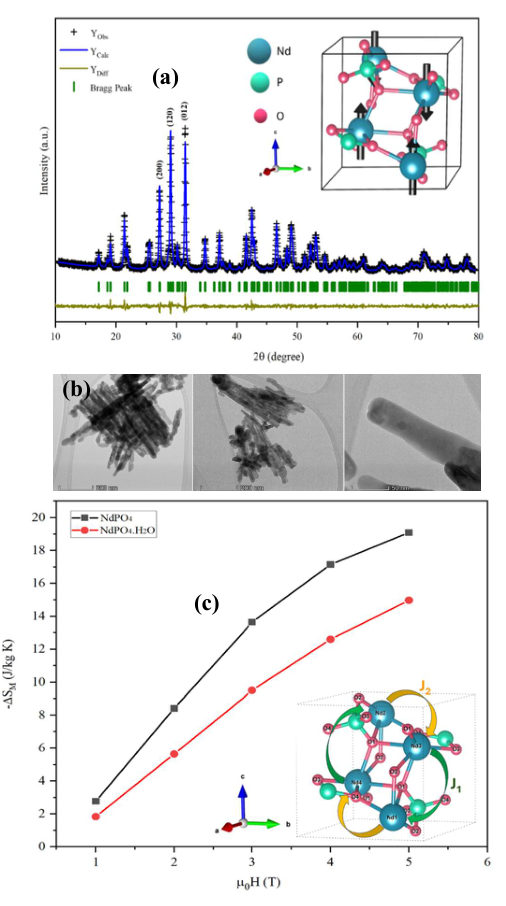
Summary. This paper demonstrates that anhydrous NdPO4 is a highly promising material for cryogenic refrigeration due to its large magnetocaloric effect near 3 K. It shows that this material can outperform much more expensive rare-earth alternatives, making it an economically viable candidate for low-temperature cooling.
Why it may be interesting. not directly relevant
Main problem. The need to find affordable, chemically stable, and mechanically robust alternatives to expensive rare-earth-based materials (like Dy, Ho, or Tb) for use in cryogenic refrigeration.
Main result. The anhydrous monoclinic phase of NdPO4 exhibits a large magnetocaloric effect of approximately 19 J/kg K under 5 T near 3 K, outperforming several more expensive reference materials.
Method. The study uses a facile precipitation growth route and thermal annealing for synthesis, combined with XRD, TEM, and SQUID magnetometry, supplemented by DFT calculations.
Model / system. Neodymium orthophosphates (NdPO4) in two structural phases: a hydrated hexagonal rhabdophane-type and an anhydrous monoclinic monazite-type, characterized by nanorod morphology.
Key observables. Magnetic entropy change (-delta S), magnetization, effective magnetic moments, Curie-Weiss temperature, and exchange coupling.
Important parameters / regimes. Temperature range of 2-300 K, magnetic fields up to 7 T, and the specific cryogenic regime near 3 K.
Assumptions / limitations. The study focuses on the potential for cryogenic applications and assumes the stability of the synthesized phases for industrial use.
Figures summary. Fig 1a shows XRD patterns and exchange interactions; Fig 1b displays TEM images of nanorod morphology; Fig 1c shows magnetic entropy changes as a function of magnetic field at 3 K.
Paper structure. The paper introduces the problem of rare-earth costs, describes the synthesis and structural characterization of NdPO4 phases, presents magnetic measurement results and DFT calculations, and concludes with a performance comparison for refrigeration applications.
The RPO4 orthophosphates (R = rare earth element) have recently attracted a wide interest due to the strong coupling between their electronic, orbital and structural ordering parameters resulting in a variety of functional properties. Herein, we demonstrate that NdPO4 phases synthesized via a facile precipitation growth process unveil promise in low-temperature magnetic cooling. The analysis of their structural properties reveals nanorod forms with diameters of 10 to 20 nm and lengths ranging from 200 to 500 nm while the heat treatment transforms their hexagonal rhabdophane-type structure to a monoclinic anhydrous monazite-type symmetry. Magnetization measurements and DFT calculations show strong antiferromagnetic couplings and the absence of any magnetic ordering in the 2-300 K range. On the other hand, the monoclinic phase of NdPO4 exhibits a large magnetocaloric effect of about 19 J/kg K under 5 T near 3 K, outperforming some reference materials containing more expensive rare-earth elements with high magnetic moments.
Authors: Yizheng Liu, Carl Peterson, Chinmoy Nath Saha, Marko J. Tadjer, Sriram Krishnamoorthy
Type: experiment · Category: other · PDF: https://arxiv.org/pdf/2604.27262v1
Analysis basis: full PDF text, analyzed in chunks
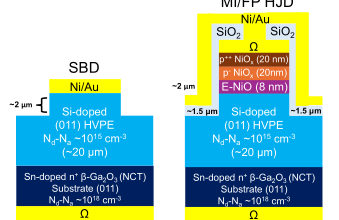
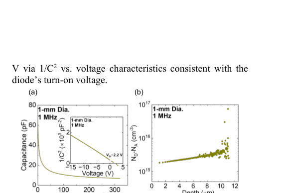
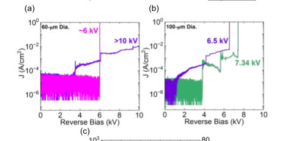
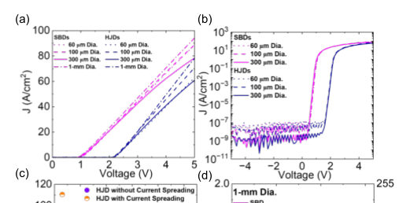
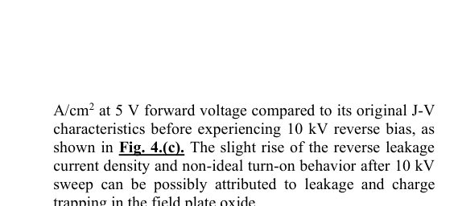
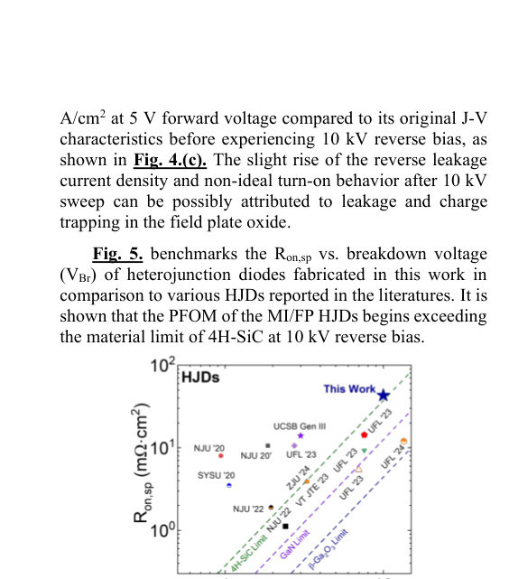
Summary. This paper reports the development of high-voltage beta-gallium oxide diodes that achieve a breakdown voltage of over 10 kV. By using a nickel oxide heterojunction, the researchers bypassed the difficulty of p-type doping in gallium oxide, achieving a high power figure of merit for next-generation power electronics.
Why it may be interesting. not directly relevant
Main problem. The lack of reliable p-type doping in beta-gallium oxide (beta-Ga2O3) prevents the creation of high-voltage power electronic devices for applications like EV charging and AI data centers.
Main result. Demonstration of vertical heterojunction diodes (HJDs) with a breakdown voltage exceeding 10 kV and a power figure of merit (PFOM) greater than 2.3 GW/cm2.
Method. Fabrication of edge-terminated vertical HJDs using an e-beam/sputtered nickel oxide (NiOx) stack on (011) beta-Ga2O3, utilizing BCl3 ICP dry-etching for mesa isolation and field-plate structures.
Model / system. The experimental platform consists of vertical heterojunction diodes featuring an e-beam/sputtered NiOx stack on epitaxial (011) beta-Ga2O3 with a 20-micrometer thick drift layer.
Key observables. Breakdown voltage (VBr), specific on-resistance (Ron,sp), power figure of merit (PFOM), parallel-plane breakdown field, turn-on voltage (Von), and rectifying ratio.
Important parameters / regimes. Breakdown voltage > 10 kV, specific on-resistance = 43 mOhm*cm2, breakdown field > 5.3 MV/cm, and carrier density ~ 2 x 10^15 cm^-3.
Assumptions / limitations. The use of a non-current spreading model for J-V normalization was noted as necessary to avoid significant discrepancies.
Paper structure. The paper introduces the motivation for high-voltage power electronics, describes the device architecture and fabrication process (metallization, NiOx deposition, and etching), presents the electrical characterization results (breakdown and resistance), and discusses the extracted breakdown field and performance metrics.
Beta-gallium oxide (β-Ga2O3) holds enormous potential for medium voltage range power electronic applications. This work reports VBr > 10 kV/Ron,sp = 43 mΩ*cm2 class edge terminated vertical heterojunction diodes (HJDs) with e-beam/sputtered nickel oxide (NiOx) stack on epitaxial (011) β-Ga2O3. The power figure of merit (PFOM) of the HJD exceeds 2.3 GW/cm2. The extracted parallel plane breakdown field is > 5.3 MV/cm, which is the highest reported electric field for thick (011) β-Ga2O3 epitaxial drift layer.
Authors: Rogério Almeida Gouvêa, Gian-Marco Rignanese
Type: theory · Category: disordered systems and neural networks · PDF: https://arxiv.org/pdf/2604.27685v1
Analysis basis: abstract only; PDF text extraction failed or PDF unavailable
Summary. VibroML is an automated Python toolkit designed to fix structural instabilities in predicted crystals using machine-learned potentials and genetic algorithms. It moves beyond simple stability checking to actively find stable polymorphs and new compositions through targeted alloying. This enables a much more efficient high-throughput screening of complex materials.
Why it may be interesting. not directly relevant
Main problem. Identifying dynamical instabilities in predicted crystalline materials is insufficient; there is a need for automated pathways to remediate these instabilities and find stable polymorphs.
Main result. The introduction of VibroML, a toolkit that uses an energy-guided genetic algorithm and machine-learned potentials to automate structural remediation and discover stable crystal structures.
Method. The toolkit employs an energy-guided genetic algorithm for navigating potential energy surfaces, coupled with automated molecular dynamics for finite-temperature validation and targeted alloying via the ProtoCSP engine.
Model / system. The system involves crystalline materials, specifically focusing on perovskite networks (e.g., Cs2KInI6 and KTaSe3) and high-symmetry stoichiometries from the Alexandria database.
Key observables. Phonon dispersion, vibrational stability, and finite-temperature structural retention.
Important parameters / regimes. 0 K harmonic stability, finite-temperature stability, and elemental combinations (quaternary and quinary).
Assumptions / limitations. The method relies on the accuracy of foundational machine-learned interatomic potentials (MLIPs).
Paper structure. The paper introduces the VibroML toolkit, describes the genetic algorithm for structural remediation, details the integration with ProtoCSP for alloying, demonstrates application to perovskites, and showcases large-scale mining of the Alexandria database.
While machine-learned interatomic potentials (MLIPs) accelerate phonon dispersion calculations, merely identifying dynamical instabilities in computationally predicted materials is insufficient; automated pathways to resolve them are required. We introduce VibroML, an open-source Python toolkit driven by foundational MLIPs that shifts the paradigm from stability verification to automated structural remediation. VibroML employs an energy-guided genetic algorithm that vastly outperforms traditional soft-mode following, efficiently navigating the potential energy surface to uncover diverse, dynamically stable polymorphs. As 0 K harmonic stability does not guarantee macroscopic viability, an automated molecular dynamics workflow evaluates finite-temperature structural retention. VibroML also couples with ProtoCSP, our combinatorial structure prediction engine, to stabilize frustrated crystal topologies via targeted alloying, successfully rescuing functional perovskite networks like Cs$_2$KInI$_6$ and KTaSe$_3$. Demonstrating broader applicability, we mined the Alexandria database -- where ~50% of quaternary and 99.5% of quinary elemental combinations lack any structural entries -- to identify thousands of abandoned, high-symmetry stoichiometries. Deploying ProtoCSP's "cold start" retrieval and VibroML's evolutionary search on a sample, we successfully identified dynamically stable low-symmetry candidates. Through integrated structural remediation, thermal validation, and systematic compositional exploration, VibroML enables a comprehensive deep-screening approach, yielding physically sound structural propositions that far surpass standard high-throughput workflows.
Authors: Michael L. Whittaker, Pan Wang, Chunhui Li, Naman Katyal, Piotr Zarzycki
Type: theory · Category: other · PDF: https://arxiv.org/pdf/2604.28099v1
Analysis basis: full PDF text, analyzed in chunks
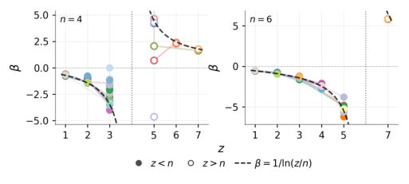
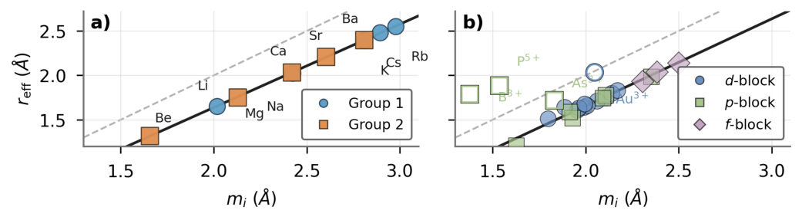
Summary. This paper provides a physical derivation for the long-standing empirical bond-valence rule by showing it emerges from screened Coulomb electrostatics. It identifies the bond-valence softness parameter as a measurable electronic screening length, transforming an empirical rule into a predictive physical descriptor. The theory is highly validated against first-principles electron density data across various chemical blocks.
Why it may be interesting. not directly relevant
Main problem. The bond-valence model (BVM) is a widely used empirical method for estimating bond strengths in crystals, but it lacks a derivation from a specific physical interaction and its exponential dependence on bond length is not physically grounded.
Main result. The paper proves that the bond-valence exponential form is the leading-order limit of Yukawa-screened Coulomb electrostatics, providing a physical basis for the model's parameters.
Method. The authors use a Taylor expansion of the Yukawa weight about a Boltzmann-weighted mean bond length and validate the theory by comparing predicted parameters against first-principles electron density data from the Materials Project.
Model / system. The study focuses on ionic solids and coordination environments, specifically cation-oxygen species, modeled using a Yukawa-screened electrostatic potential.
Key observables. Bond-valence softness (B), bond-valence intercept (R0), electronic screening length (lambda), and the bond-valence Boltzmann shell centroid (mi) compared to the first-principles screening centroid (reff).
Important parameters / regimes. The screening length (lambda), formal charge (z), coordination number (n), and the bond-valence parameter B (bond-valence softness).
Assumptions / limitations. The derivation relies on a first-order Taylor expansion, which may fail for highly distorted coordination shells, and assumes an isotropic Yukawa regime.
Figures summary. Figure 1 shows the predicted slope beta versus formal charge for various species; Figure 2 demonstrates the linear correlation between the bond-valence shell centroid and the first-principles screening centroid for s-block and other oxides.
Paper structure. The paper introduces the empirical BVM, provides a theoretical derivation using Yukawa-screened electrostatics, validates the model using large-scale first-principles data from the Materials Project, and discusses the limits of the theory in anisotropic bonding regimes.
The bond-valence model is a standard way to estimate bond strengths in crystals, but its exponential dependence on bond length has lacked a derivation from a specific physical interaction. We show that this form emerges as the leading-order limit of screened Coulomb electrostatics and that the fitted bond-valence softness can be interpreted in terms of an electronic screening length. This turns bond valence from an empirical fitting rule into a transferable descriptor of local screened charge response across coordination environments. The resulting theory predicts how the bond-valence parameters should vary with ionic charge and coordination number, and that prediction agrees with 150 fitted valences from 94 cation-oxygen species, including 68 in fourfold coordination and 82 in sixfold coordination, at an abundance-weighted coefficient of determination of 0.986. A comparison with first-principles charge densities shows that the bond-valence shell radius tracks the electronic screening cloud with coefficients of determination of 0.9998 for ten alkali and alkaline-earth oxides and 0.967 for 21 other binary oxides whose nearest-neighbor environments match the theory's assumptions. The widely used bond-valence model is thus the leading-order expression of screened electrostatics in ionic solids.